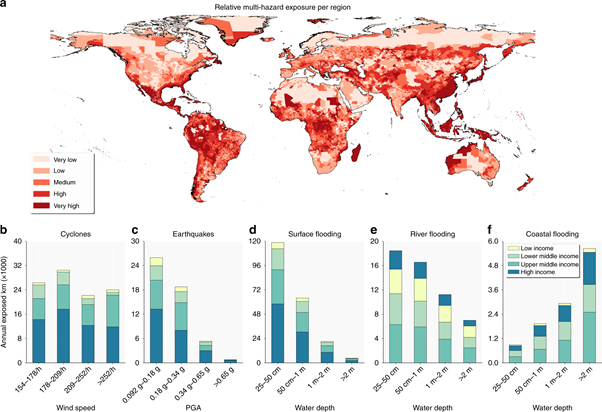
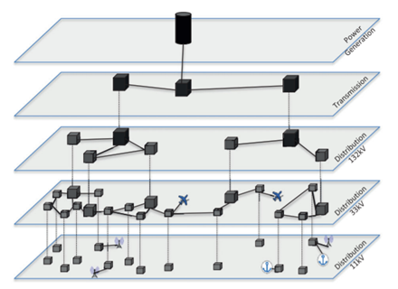
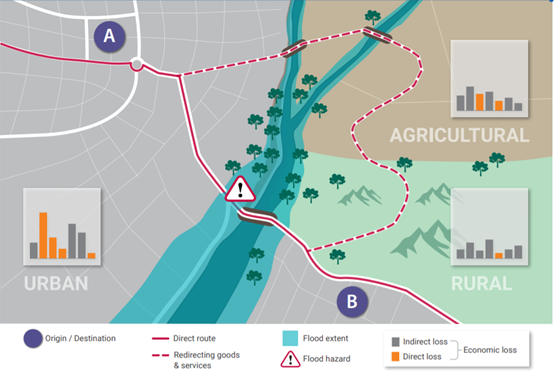
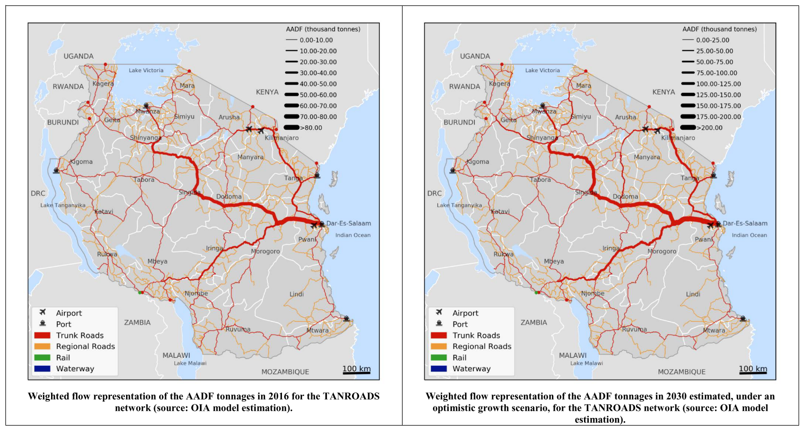

This mini-lecture discusses the difference between direct and indirect consequences of infrastructure failure. The case of the transport sector is used to illustrate the differences between direct and indirect damage assessments for infrastructure.
Traditionally, infrastructure risk assessments conducted by engineers, insurers or government would only account for direct damages. However, the indirect damages caused by interruptions to infrastructure network flows can be significant.
This section will discuss the differences between direct and indirect damage assessment. Direct and indirect impacts will be discussed in turn from a conceptual standpoint, before exploring the difference in more depth for the transport sector.
To quantify the direct damages to infrastructure, physical hazard exposure analyses are overlaid with fragility or vulnerability functions. Fragility curves are functions that describe asset vulnerability, or the measure of negative consequences suffered due to failures when exposed to a hazard of given magnitude and extent, see mini-lecture 10.2.
Koks et al. (2019), estimated the global exposure of road and railway assets to a range of probabilistic climatic and geohazards (tropical cyclones, surface flooding, river flooding, coastal flooding, and earthquakes) to quantify the direct expected annual damage costs (EADs) to road and rail assets at national and sub-national scales.
Figure 11.2.1. shows the relative exposures of road and rail assets globally, highlighting that low income and lower to middle income countries had the highest multi-hazard exposures. It was found that ~27% of all road and railway assets globally were exposed to at least one hazard with a 1 in 250 return period and ~7.5% of the road and railway assets are exposed to a 1 in 100-year flood event.

Figure 11.2.1: Global multi-hazard transport infrastructure exposure (Koks et al. 2019)
While direct damages help understand the extent of physical stock of assets that are at risk, they provide an incomplete picture about the wider consequences of infrastructure failures that arise due to dependencies between infrastructure sectors.
Indeed, by incorporating the effects of disruptions of infrastructure services on the dependent population on each individual infrastructure asset across a network, a much more valuable metric can be achieved across infrastructures.
The electricity sector is the most pronounced example of this, as almost all other infrastructure sectors - including water, telecommunications, transport and gas - require electricity supplies.
Figure 11.2.2 represents the electricity network and its connections to other infrastructures. This shows how the consequences of failure of a given electricity asset may have cascading impacts to other infrastructures such as telecommunications.

Figure 11.2.2: Illustration of the structure of electricity infrastructure networks and its interconnections with other sectors (Pant, Thacker, et al. 2018)
This clearly also has implications for our understanding of the extent of disruption to end-users and dependent economic activities, which will be discussed in the subsequent mini-lecture (11.3).
In the transport sector, calculating the direct consequence of natural hazards would simply involve calculating the economic cost of repairing the physical damages to the affected section of road or rail. However, this neglects the indirect consequences of a section of road or rail being out of service.
Given that the transport network is fundamental for the movement of goods and labour, redirecting this flow via a less efficient route will be associated with an additional cost.
Figure 11.2.3 shows how flood damage to a section of road leads to the rerouting of flows of goods and services, resulting in both direct and indirect losses. The solid red line shows a route from A to B. When a section of the road is damaged by a flood event - indicated by the warning sign – vehicles must take the longer route indicated by the dashed red line. The damage to the section of road is, of course, associated with a direct economic cost in line with what it would cost to repair it. However, there is also a cost associated with re-directing the transportation of goods via the alternative route. The latter cost is the indirect cost of disruption.

Figure 11.2.3: Illustration of how the flow of goods and services would have to be rerouted during a flood, and hence how the costs of the flood damage go beyond the cost of reconstructing the section of road that is directly affected (Hall et al. 2019)
The cost of rerouting the flow of freight under scenarios of present and future flooding was quantified by Pant, Koks, et al. (2018) in Tanzania. Figure 11.2.4 shows the rerouted Annual Average Daily Flow (AADF) of freight for road network links (2016) and bottom right shows the projected cost of rerouting for road network links (2030).

Figure 11.2.4: The rerouted AADF of goods per section of road in Tanzania (Pant, Koks, et al. 2018)
This analysis is powerful for identifying hotspots of infrastructure criticality, where the effects of flooding not only include the rehabilitation of damaged assets but also include the cost of the rerouting of goods during the period of disruption. Hotspots are identified where a lack of transport network redundancy means the route that substitutes the affected route is far less efficient. This may also help to guide the prioritisation of adaptation funds to where there is a lack of network redundancy.
Both direct and indirect consequences of infrastructure failure affect society. The next section explores how the extent of disruptions to people can be quantified.
This lecture provides a comparison between direct and indirect infrastructure damages, using the transport sector as an in-depth case study. You should now be able to conceptually understand the difference between direct and indirect infrastructure damages and be able to calculate of direct and indirect damages for the transport sector.